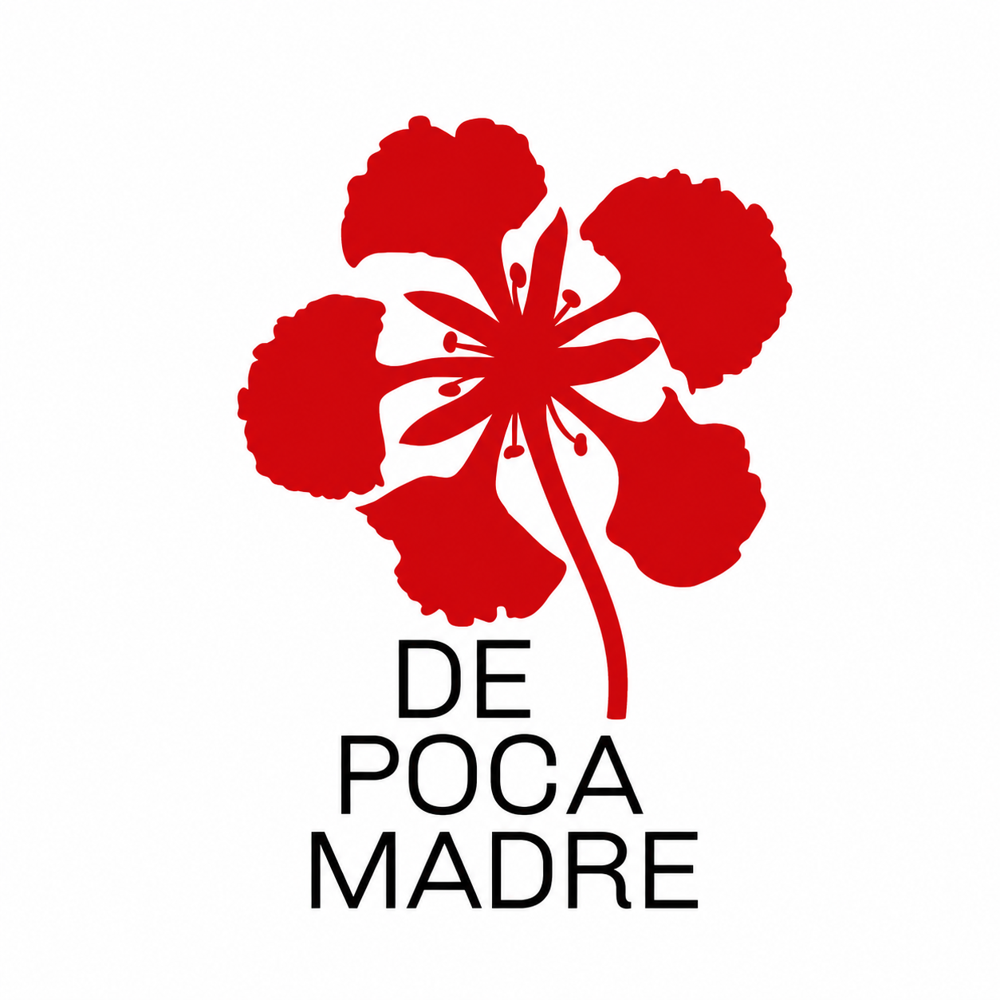
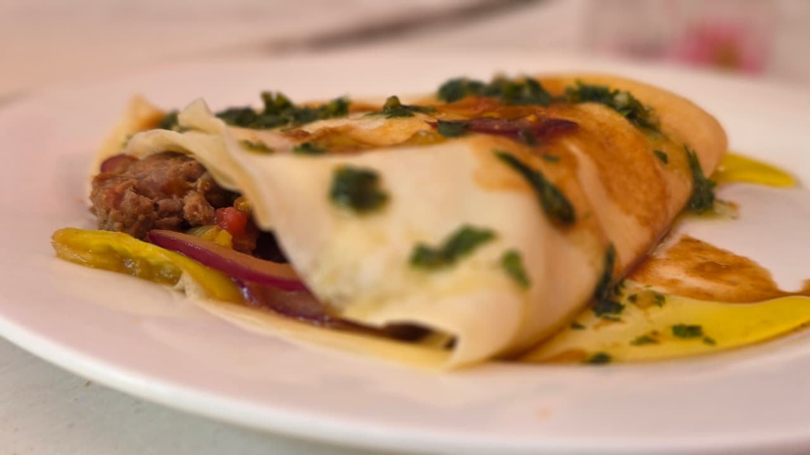
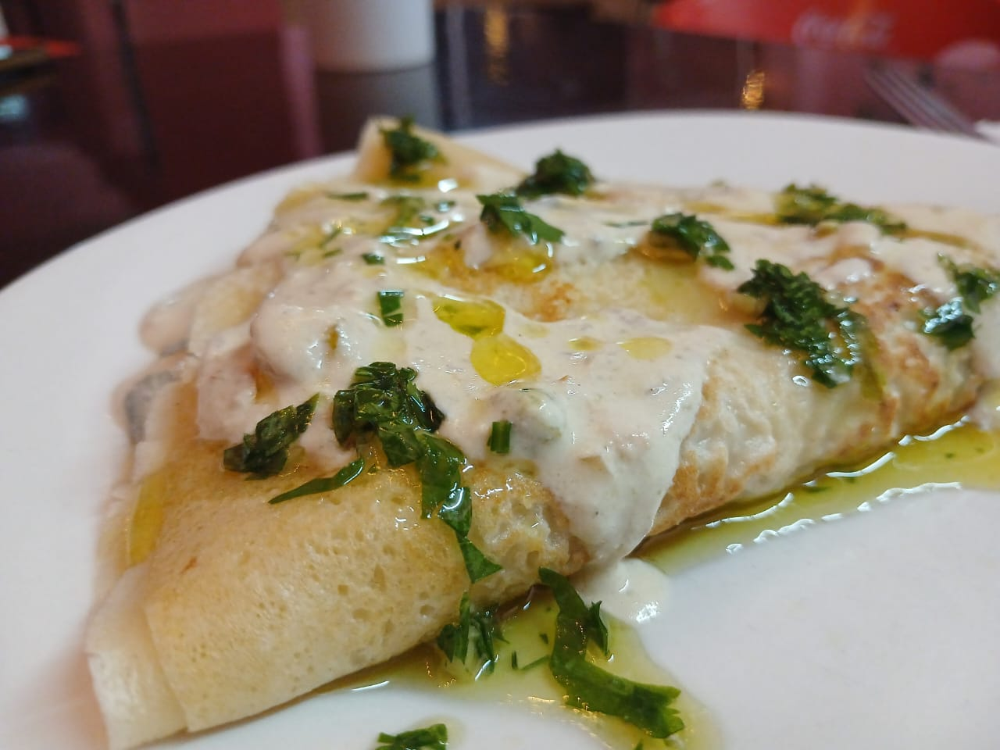
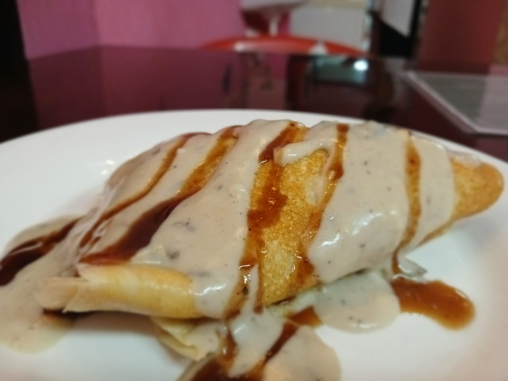
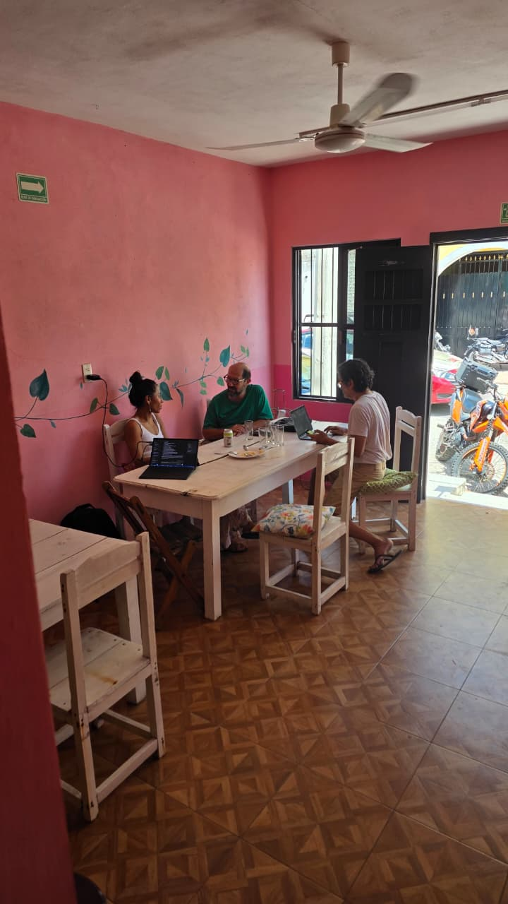
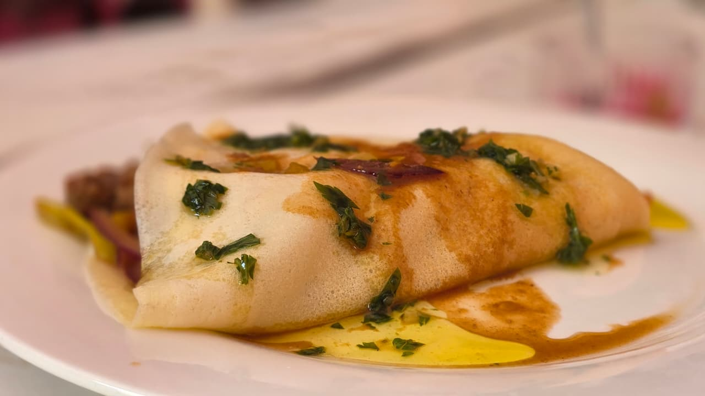
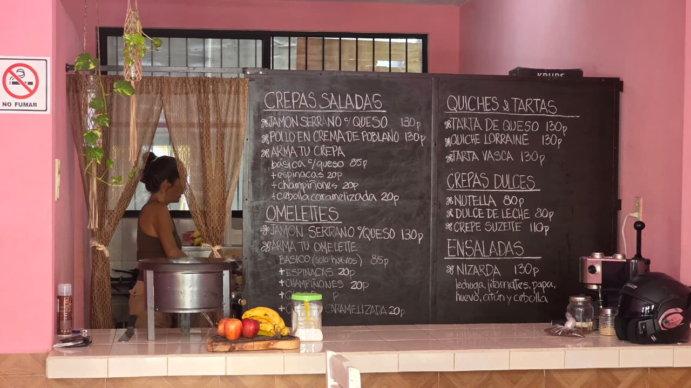

Savoury crêpes
Serrano ham and cheese$130
Chicken in poblano cream$130
Build your own, cheese base$85
Extra: spinach, mushrooms or caramelised onion$20

Breakfast in Valladolid, Yucatán
Savoury and sweet crêpes, omelettes, tarts and coffee in a relaxed Candelaria hideaway. Fresh, uncomplicated food made to order.
Come for chicken crêpes in poblano cream, an omelette made to order or something sweet with coffee. We speak English, so you can call or message before wandering Valladolid hungry and betrayed by your map.






A short walk from central Valladolid. Eat in or order to take away.
Get directions